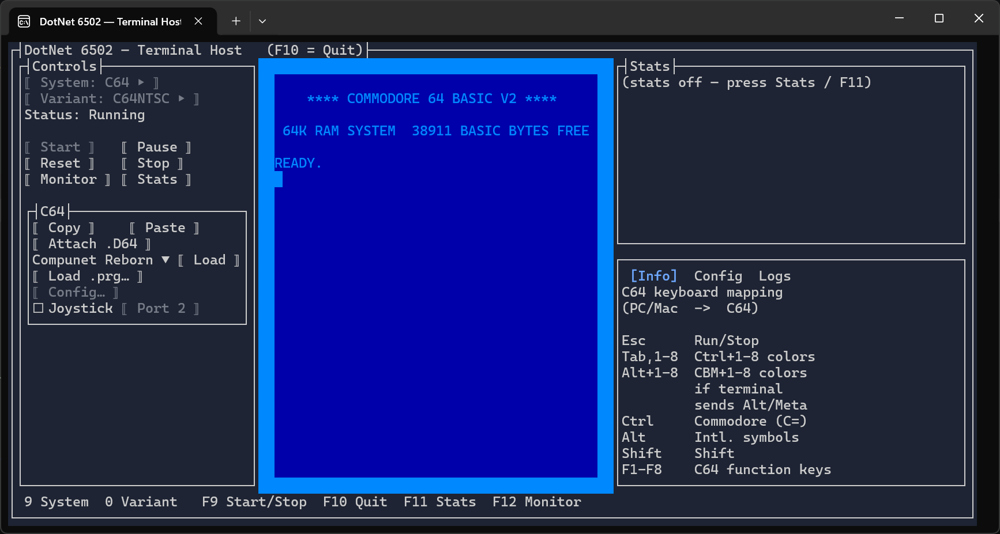

Terminal (TUI) app¶

Interactive host app that runs the emulator inside a real terminal, using
Terminal.Gui v2 for the window/control chrome. The
emulated text-mode screen is rendered as colored Unicode cells, so it works over SSH and inside
tmux/screen. Text mode only — there is no audio and no bitmap/sprite graphics output.
Technologies:
- UI:
Terminal.Guiv2 controls. - Rendering:
Highbyte.DotNet6502.Impl.Terminal— a system-agnostic render target that consumes the system's video-command stream into terminal cells. - Input:
Highbyte.DotNet6502.Impl.Terminal. - Audio: none (terminals have no audio output).
Like the other host apps, the entry exe holds no compile-time reference to any emulated system.
Systems arrive at runtime via plugin discovery: engine plugins (Impl.Terminal.<System>) register
the system, and shell plugins (App.Terminal.Shell.<System>) contribute the per-system menu, info
panel, and config dialog. See Architecture and
Systems.Plugins.
Terminal requirements¶
The app drives the terminal with modern features, so it needs a reasonably capable terminal emulator — older or minimal terminals may render incorrectly:
- 24-bit "true color" — every emulated screen cell and the UI chrome use explicit RGB colors. On
a 16/256-color terminal the driver approximates them, so colors look wrong. On Windows, use a
modern terminal such as Windows Terminal; the legacy
conhostconsole does not render true color reliably. - Unicode (UTF-8) and a capable font — PETSCII screen codes are mapped to Unicode box-drawing, block, and shade glyphs, so the terminal font must include those (most modern monospace fonts do).
- Size — large enough for the three-column layout: about 30 rows tall and a wide window (~100 columns) shows everything without the panes clipping. Smaller still runs, but content is truncated.
- Mouse (optional) — buttons, the per-system menu, and the Info/Config/Logs tabs are clickable when the terminal reports mouse events, but every action also has a keyboard command (via the leader key, see below), so a mouse is not required.
- Modifier-key reporting — some C64 colour-key chords use Alt/Ctrl; whether they reach the emulator depends on the terminal forwarding those modifiers (see the in-app Info panel).
It works over SSH and inside tmux/screen as long as the outer terminal meets the above.
Supported systems¶
- C64 (
Impl.Terminal.Commodore64+App.Terminal.Shell.Commodore64) — character mode only. PETSCII graphics screen codes are mapped best-effort to Unicode box-drawing / block / shade glyphs for the built-in (uppercase/graphics) charset. - VIC-20 (
Impl.Terminal.Vic20+App.Terminal.Shell.Vic20) — character mode only.
The screen pane resizes automatically to fit the running system's frame (C64 ≈ 40 columns,
VIC-20 ≈ 22 columns), and the status/logs column reflows around it. The emulated screen is drawn
without an extra framing box — each system renders its own coloured screen border, which is wide and
wasteful in a terminal, so the view crops it down to a thin, consistent border on every side. This
keeps the C64 (29 cells tall including its border) within a default ~30-row terminal without the user
having to enlarge the window. How much border to keep on each side is configurable in
appsettings.json: VerticalBorderRows (top/bottom, default 1) and HorizontalBorderColumns
(left/right, default 2); set either to 0 to show the full emulated border on that axis.
Layout and controls¶
The window has a Controls column (left), the Screen in the middle, and a Stats box plus a tabbed Info / Config / Logs pane on the right. A per-system menu (contributed by the shell plugin) appears below the standard controls.
Host commands (leader key)¶
A running emulator claims almost every key, and terminals/window managers reserve the rest (F10 =
menu, F11 = fullscreen, Ctrl/Alt/Shift = emulator modifiers), so there is no room for a row
of direct host hotkeys. Instead, host commands hang off a single leader key — press it to arm
host mode, then press one command key:
Press F9, then… |
Action |
|---|---|
S |
Start / Stop toggle |
M |
Toggle the Monitor |
T |
Toggle the Stats (instrumentation) box |
Q |
Quit the app |
Y |
Cycle the selected System (only while stopped) |
V |
Cycle the selected Variant (only while stopped) |
Tab |
Toggle focus between the emulator screen and the host UI (see below) |
Esc (or any other key) |
Cancel host mode |
The bottom line shows just the leader-key reminder (e.g. [UI NAV] F9 Menu) normally, so it is
obvious when host mode is not active; it expands to the full command menu only while host mode is
armed. Every command also has a button in the Controls column — including a Quit button — so a
mouse works without the keyboard. (Terminals offer no clickable window close control, and Esc is
reserved for the emulator's RUN/STOP, so quitting is via the Quit button or F9 Q.)
The leader key defaults to F9 because it is reliable across terminals (unlike F10/F11). If your
terminal grabs F9, rebind it with the LeaderKey setting in appsettings.json (any KeyCode name,
e.g. "F12"). Host mode is suppressed while a modal dialog (config, file picker, monitor) is open, so
keys reach the dialog's fields normally. F1–F8 are reserved for the emulated systems (e.g. the C64
function keys).
Keyboard navigation (focus modes)¶
There are two focus modes; F9 Tab (or F9 F6) toggles between them, and the bottom-line
indicator ([EMULATOR] / [UI NAV]) shows which is active:
- Emulator mode — the emulator screen has focus, so every key (except the leader key) goes to the emulated machine. The host-UI panels are dimmed to signal they're inactive. Start/Resume enters this mode automatically.
- UI mode — focus is on the host controls, so the keyboard navigates every control with no per-control shortcuts. Stopping or pausing the emulator returns to this mode automatically.
While the emulator is running it owns every key, so plain Tab/F6 reach the machine, not the host.
The leader key is the way out: press F9 then Tab (or F9 F6) to hand the keyboard back to
the host UI. The same F9 Tab gives it back to the emulator. (The emulator screen is also kept out
of the Tab/F6 rings, so once in UI mode navigation never falls back into it by accident.)
In UI mode the controls are organised into areas, each a Terminal.Gui tab group: the Controls
column, the per-system menu (e.g. the C64 menu), and the Info/Config/Logs pane. Focus is
scoped per area — Tab stays within one area and F6 moves between them:
| Key | Moves focus |
|---|---|
Tab / Shift+Tab |
Next / previous control within the current area |
F6 / Shift+F6 |
Next / previous area (Controls → per-system menu → tabbed pane) |
↑ ↓ ← → |
Within a control (tab strip, log list, radio group, …) |
Enter / Space |
Activate the focused button / toggle |
So to reach the C64 menu buttons, press F6 to step into the C64 menu area, then Tab to cycle its
buttons. The emulator screen is deliberately left out of these rings; enter it with Start/Resume or
F9 Tab.
Config dialog¶
Each system contributes a Config dialog (opened from its menu) for editing settings while the emulator is stopped, with live validation:
- C64 — ROM directory/files (with auto-download), SwiftLink (enable, cartridge I/O address, interrupt mode, receive mode, transport, TCP host/port, connect-on-boot), and keyboard joystick (enable + port ½). Keyboard-joystick settings can also be toggled live from the C64 menu.
- VIC-20 — ROM directory/files (with auto-download).
See Systems / C64 / ROMs, Systems / VIC-20 / ROMs, and Systems / C64 / SwiftLink.
Monitor¶
Press the Monitor button or F9 M (while a system is running or paused) to open the built-in
6502 machine-code monitor — the same command set as the other host apps' monitor (type ? for
help). It opens full-screen over the UI, shows the accumulated output plus the current CPU/system
status, and has a command input line. While the monitor is open, emulation is halted so the
monitor has exclusive access to the CPU and memory; closing it (Esc) or a g (go) command
resumes. Breakpoints and other break triggers open the monitor automatically.
Load/save commands that take no filename (l, and the C64 lb) open a terminal file picker;
the ll <file> / llb <file> variants take an explicit path. See
Monitor library.
Stats¶
Press the Stats button or F9 T to show host instrumentation (FPS, per-frame timings, …) in the
right-hand box while a system runs.
How to run locally for development¶
For development system requirements, see Development. The Terminal app needs a real TTY, so run it from a terminal (not a debugger output pane).
From the command line¶
A headless self-test that needs no TTY (boots a system, runs a number of frames, and dumps the rendered screen as text) is useful for CI / smoke testing:
dotnet run --project src/apps/Terminal/Highbyte.DotNet6502.App.Terminal -- --selftest --frames 400 --system C64
VS Code¶
Use the Terminal (TUI) - Launch configuration. It runs in an external terminal window — a real TTY, and better suited to a full-screen TUI than the integrated terminal (and unlike the VS Code Debug Console, which redirects I/O and has no TTY at all). Terminal (TUI) - Launch (Self-test) runs the headless self-test (in the integrated terminal, since it needs no TTY).
Limitations¶
- Text (character) mode only — no bitmap, multicolor, or sprite graphics are rendered.
- No audio.
- PETSCII graphics are approximated with the nearest common Unicode glyphs, so they will not match the C64 exactly.
See Terminal requirements for the terminal capabilities the app needs, and Limitations for general project limitations.